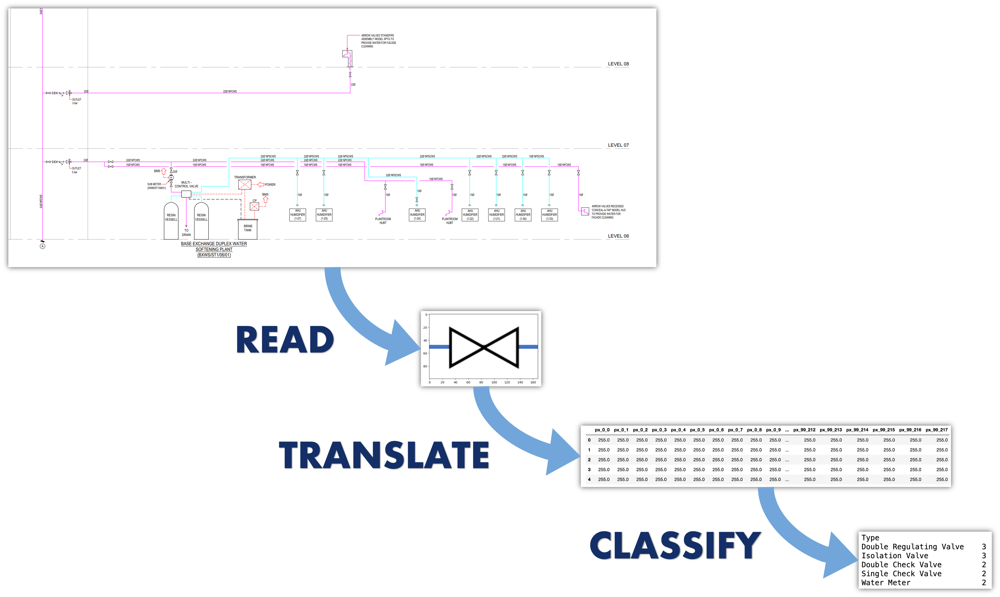
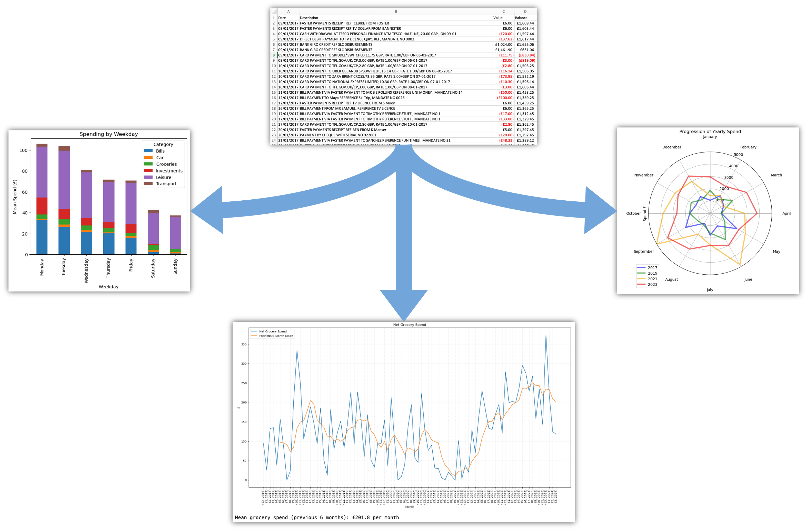
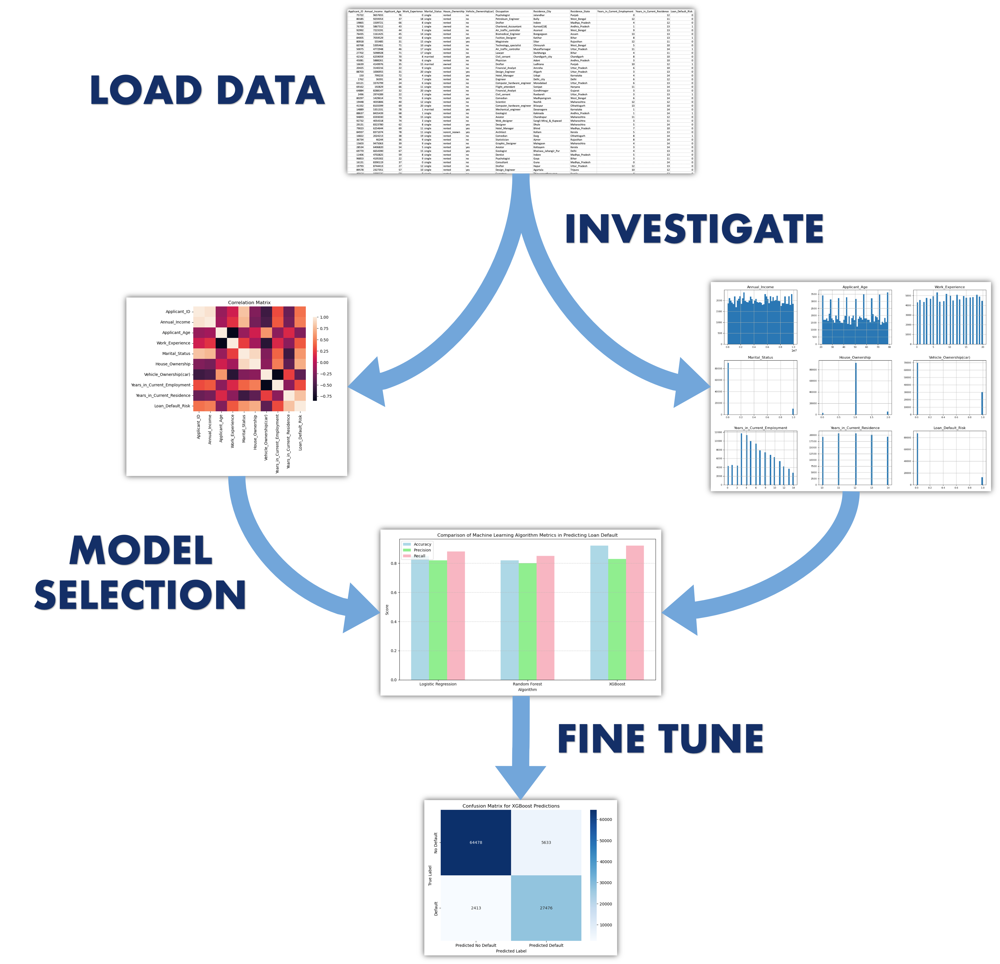

As a Mechanical Engineer working in construction, I used mechanical schematics (system drawings) daily to understand
the systems, identify the scope of work, and inform commissioning strategies.
One particular use of these drawings is the initial take-off of all components (i.e. counting up all pumps, valves,
meters, etc.) so the correct materials can be purchased in the required quantities. While this is an essential task
for the estimating and procurement stages of all projects, it has always been done the same way: one person is given
a stack of drawings to review and count manually. Not only is this a very slow and time-consuming process, but the
final totals almost always contain human error, leading to costly re-orders and delays to the project.
To solve this, I have created an application to remove the manual nature of this task - allowing users to import a pdf file of their
drawing, returning a table that summarises all components and their quanitities.
Written in Python, the application reads the drawing, identifies pipework components and leverages
Machine Learning to classify and tally the results.
While this solves one problem - it is only just the start! Training a model to read and understand schematics
can have huge applications across construction, from interrogating system design in the early stages of the project
to advising plant-replacement strategies following handover - this tool has only scratched the surface.

Many modern banking apps have in-built tools to assist customers with budgeting - from classifying transactions to tracking your spending at
specific retailers, these tools provide interesting insight into the customer and where their money is spent.
Having banked with the same company for the last 8 years, I do not have these nifty tools at my disposal. To gain the same level of insight
into my spending, I decided to download all transaction data from my account, and using Python and the matplotlib library I undertook an
exploratory analysis of this information.
Using the limited information in each transaction's description, I could identify characteristic trends in my spending, allowing me to effectively
budget my finances and save up to £100 a month.

Predicting loan defaults is crucial for financial institutions to minimize risk and make informed lending decisions.
By identifying potential defaulters early, banks and lenders can take proactive measures to mitigate losses, adjust credit
policies, and offer tailored financial solutions. Predicting these defaults is an interesting challenge, so in this
project I developed a machine learning model to do just that, using data obtained from Kaggle and using PySpark for data
processing.
Using Python and PySpark I loaded the data and started investigating - looking for high-level patterns in the distribution
of the data and exploring the correlation between variables. I then looked to clean and preprocess the data by handling
missing values, encoding categorical variables, and normalising numerical features. Careful feature engineering and model selection allowed me to create new features that captured the complex
relationships within the data and find the most suitable algorithms to model them, ready for an iterative process of
hyperparameter tuning to optimize performance.
The result was an algorthm that could predict a loan default with an accuracy and recall of over 90% - and one that could
be reliably scaled by multitudes with ease.
